«تعهد خطي» و«إشعار ولي الأمر»، وهي ليست إجراءات وقائية.
الإجراءات الثلاثة المعتمدة في المدرسة.
أن تتقن كل مشرفة إدارية دورها في منصة نوماس كما تنص عليه سياسة إدارة سلوك الطلبة 2026، فتنجز إجراءاتها أولًا بأول، وتطبع نماذجها موقّعة، وترسلها للجهة الصحيحة دون كتابة أو بحث.
الزميلات المشرفات الإداريات بمدرسة الشيماء الثانوية للبنات.
أربعة محاور قصيرة، وبعد كل شريحة نسأل: وصلت المعلومة؟ أم نحتاج تفصيلًا أكثر؟
اضغطي أي محور للانتقال إليه، أو استخدمي زر «التالي».
من لحظة التسجيل حتى اكتمال الإجراء
كل مخالفة أو تأخير أو غياب يُسجَّل يصبح حالة. الحالة تمشي على الجهات بالترتيب الذي تحدده السياسة، ولا تفتح أي جهة دورها قبل أن تكمل التي قبلها.
لأن كل تسجيل يفتح حالة جديدة لها إجراء عليكِ أنتِ. الرقم لا ينقص إلا حين تضغطين «حفظ وتوثيق التنفيذ». جرّبي بنفسكِ:
ابدئي بتسجيل تأخير للطالبة نفسها ثلاث مرات، وراقبي الرقم.
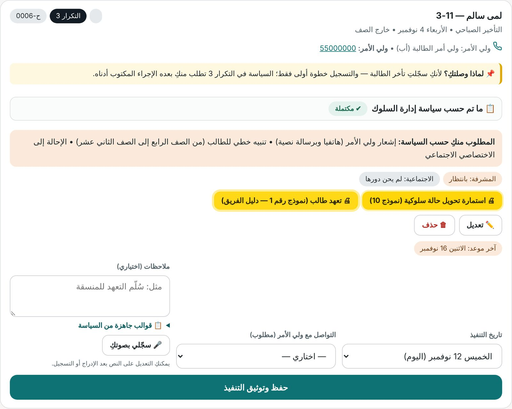
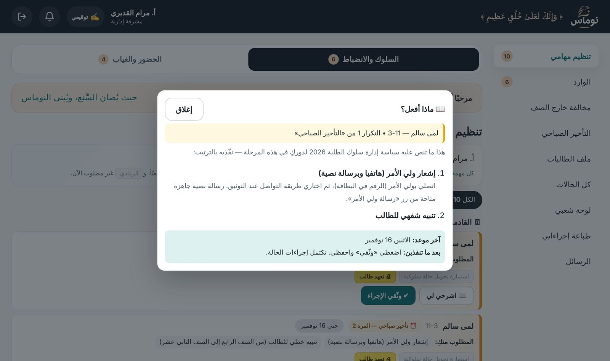
في صفحة «تنظيم مهامي» مهامكِ مرتبة حسب الأقرب موعدًا، وملونة حسب النوع:
زر «📖 اشرحي لي» يفتح خطوات الإجراء من نص السياسة لهذه الطالبة وهذا التكرار بالترتيب، مع آخر موعد، وماذا تفعلين بعد التنفيذ.
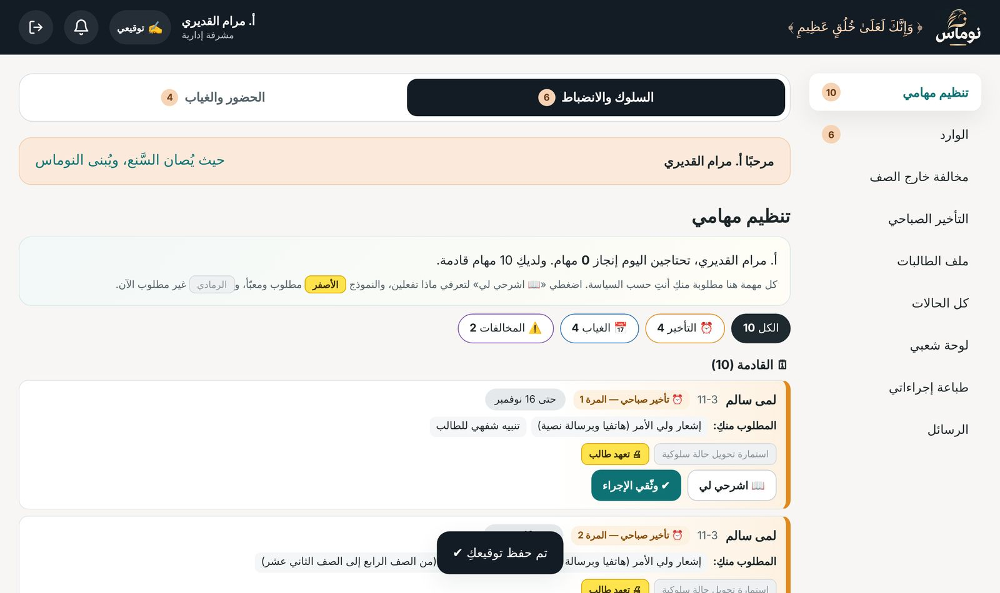
ورقة جاهزة، موقّعة، تصل لصاحبتها
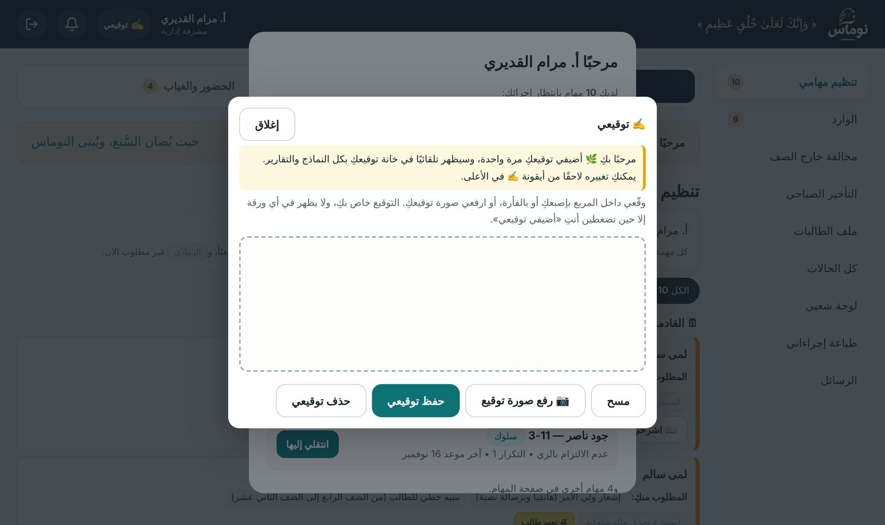
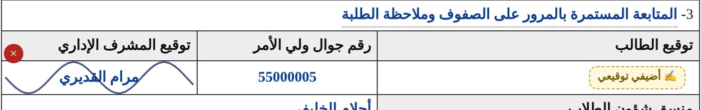
أي تابلت بسيط، مهما كان سعره (100 أو 200 أو 300 ريال)، يكفي. يكفي أن تُفتح عليه المنصة.
بديل متاح: توقّع الطالبة بالفأرة على كمبيوتر المكتب بعد قراءة الإجراء.
اقلبي كل بطاقة لتعرفي متى يظهر النموذج وما دوركِ فيه:
من دليل فريق إدارة سلوك الطلبة 2026
اقلبي ↺تنفّذين، توقّعين، توقّع الطالبة، تطبعين.
من استمارات العمل الاجتماعي 2026
اقلبي ↺حين تطلب السياسة إحالة الطالبة إلى الأخصائية الاجتماعية (مثل التأخير الصباحي في المرة الثالثة).
تعبئين سبب التحويل، توقّعين، وترسلينها للأخصائية الاجتماعية.
من استمارات العمل الاجتماعي 2026
اقلبي ↺في الغياب بدون عذر حين تصل الحالة لمرحلة الإحالة إلى الأخصائية الاجتماعية.
تعبئة الأيام والإجراءات السابقة (معبأة تلقائيًا)، ثم التوقيع والإرسال.
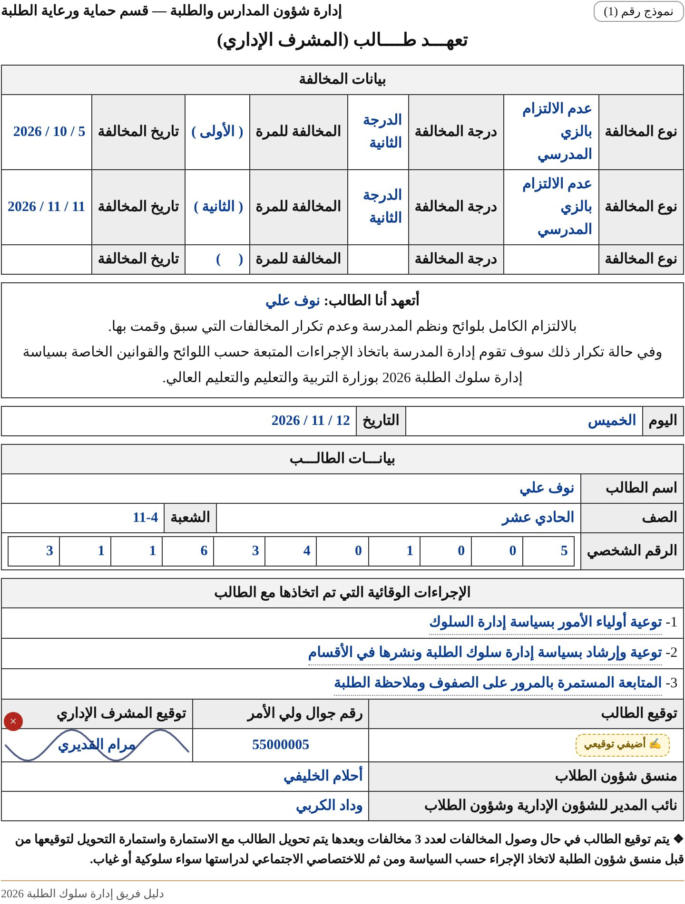
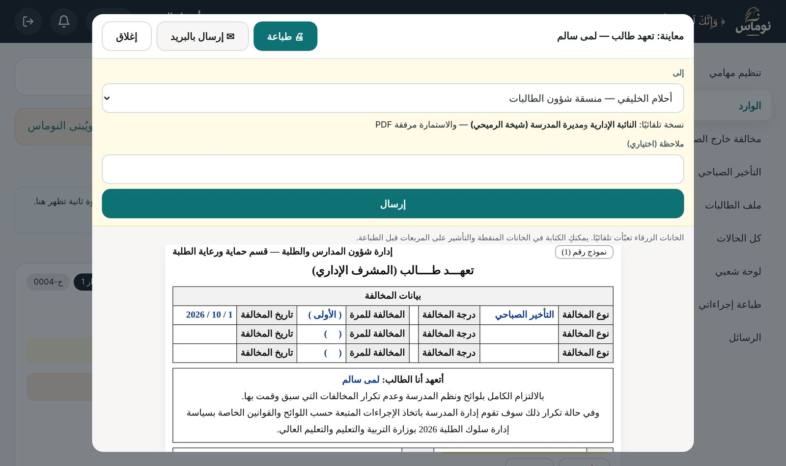
كل بند في السياسة له ورقته وإجراءاته
النص كما ورد في سياسة إدارة سلوك الطلبة 2026 لدور المشرفة الإدارية، والنموذج الذي يظهر لكِ، وإلى من ترسلين.
كانت مخالفات الطالبة تظهر مختلطة في نموذج واحد: الزي مع الغياب مع التأخير، رغم أن إجراءات كل بند مختلفة.
كل نموذج يعرض مخالفات بنده فقط:
أيقونة أيقونة
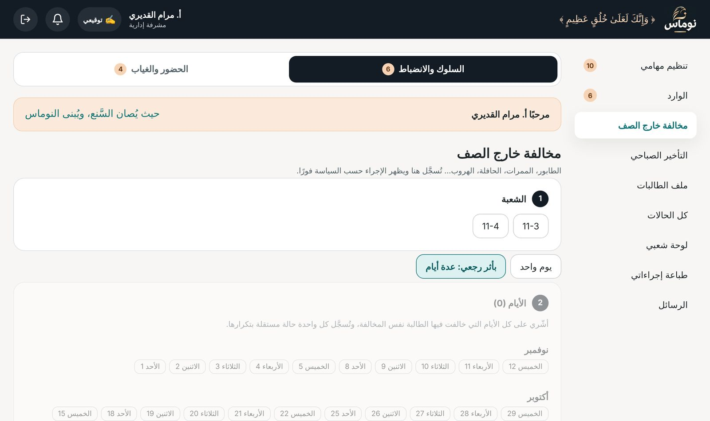
كان النظام يمنع إدخال مخالفة مرّ عليها يومان، تنظيمًا للوقت. بناءً على طلب المشرفات أُلغي هذا القفل: تستطيعين إدخال مخالفة من يومين أو من أسبوع.
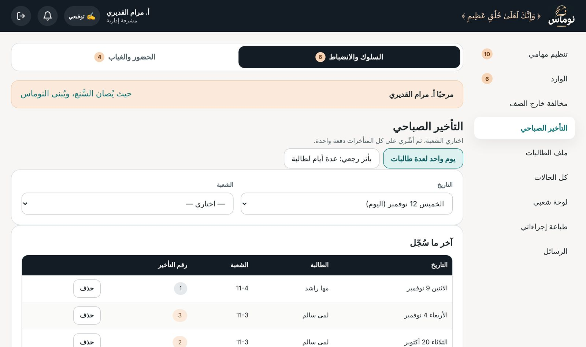
«تأخير هذا الفصل 4 • متبقٍ 3 حتى السابع (يُحتسب يوم غياب)»
«بدون عذر 3 • متبقٍ للإنذار 2 • متبقٍ لعدم الأهلية 6 (نهاية الفصل الأول)»
البرتقالي: اقتربت من الحد. الأحمر: تجاوزته.
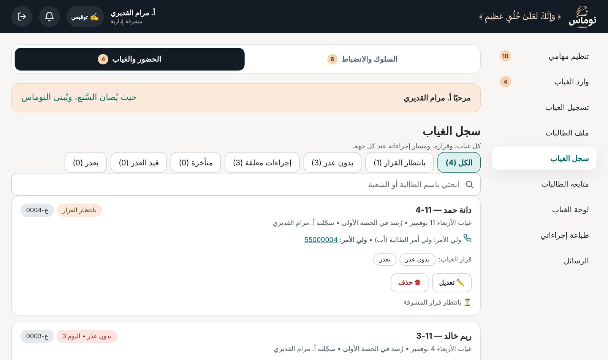
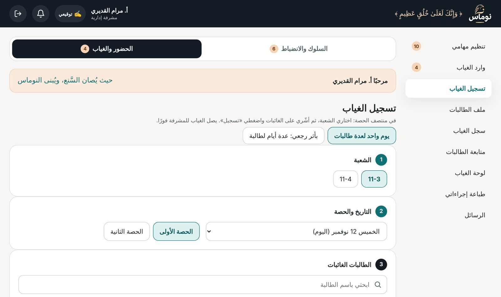
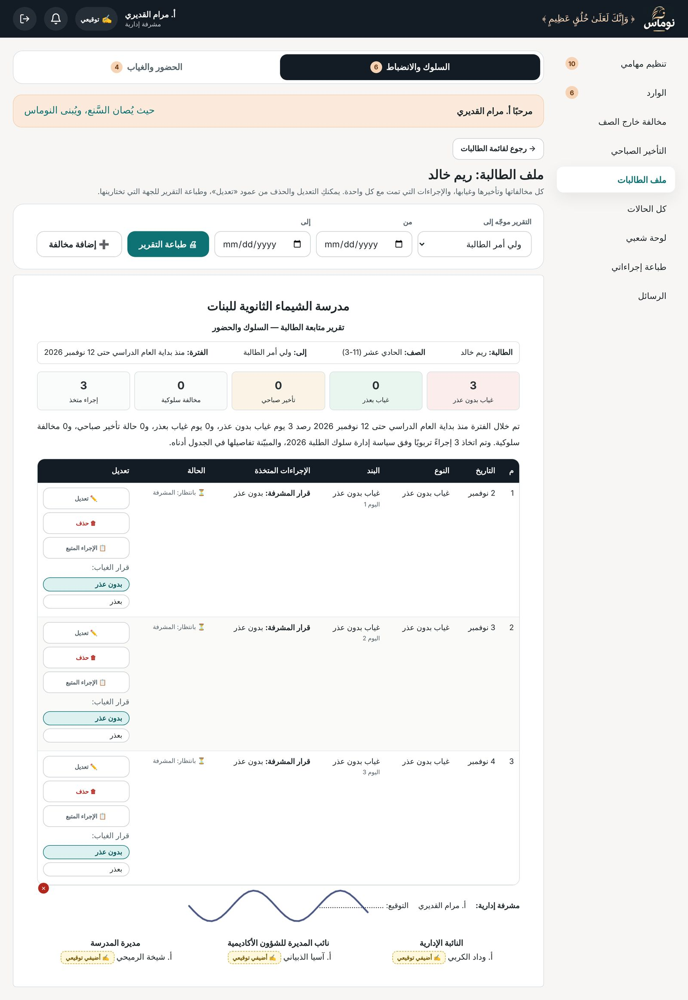
وثّقي أولًا بأول، فكل إجراء موثّق يحفظ حق الطالبة وحقكِ.